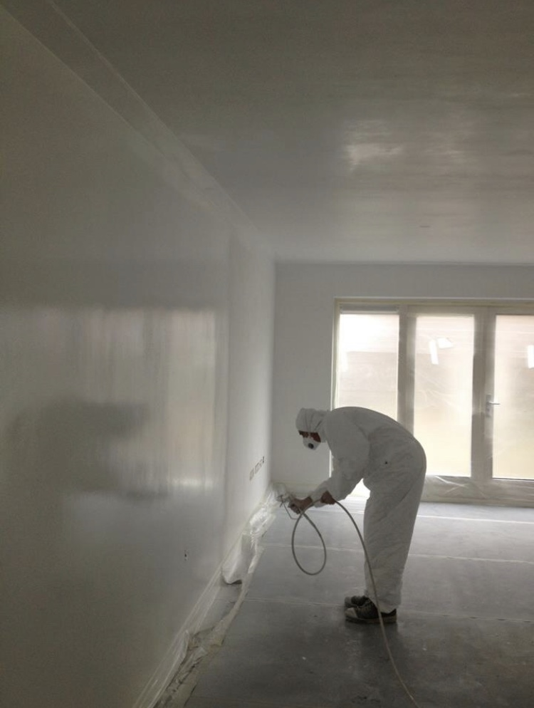
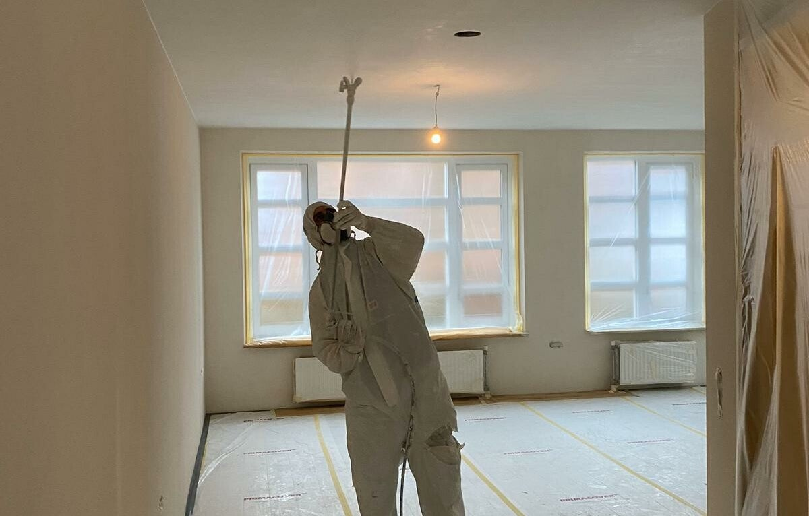
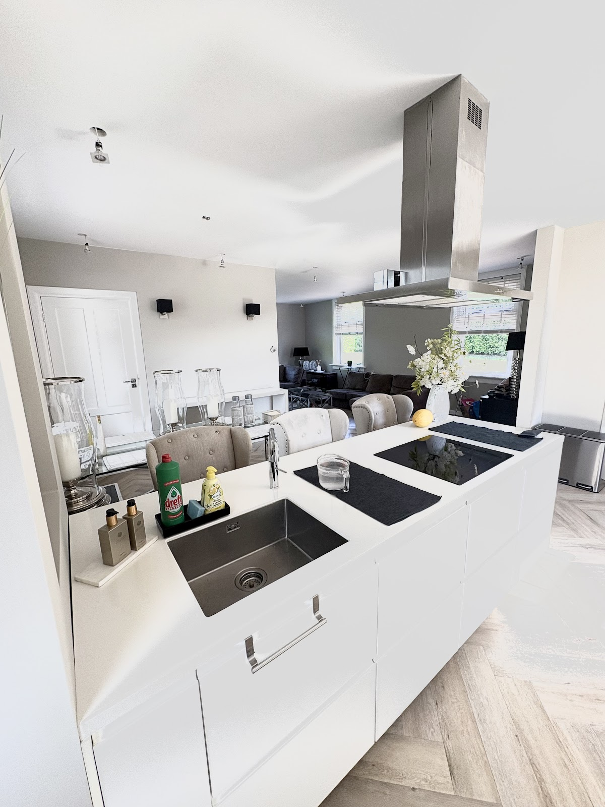
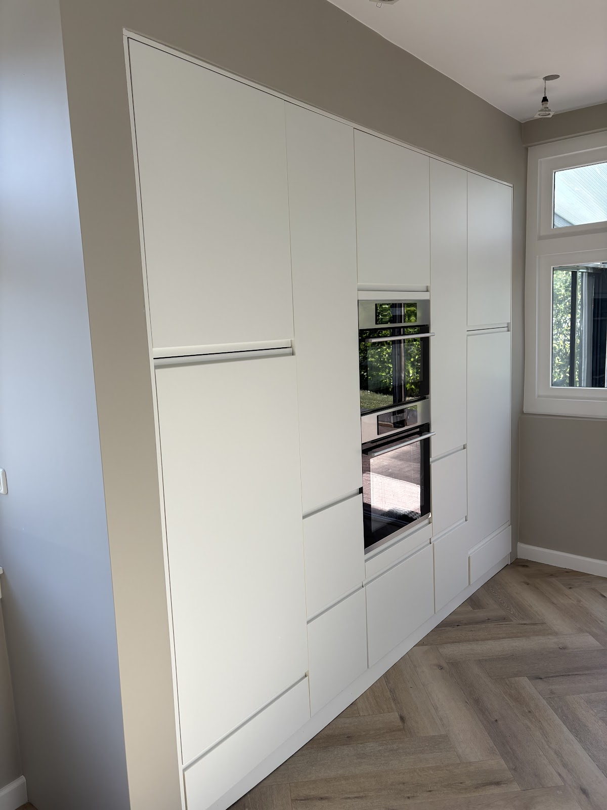

Schilder in Culemborg en regio Utrecht
Geen streep te zien.
Wij spuiten en schilderen wanden, plafonds, deuren en kozijnen. Strak, egaal en met alles netjes afgedekt. We komen eerst vrijblijvend bij u langs.
4,3 uit 6 Google-reviews
Spuitwerk is onze specialiteit.
Met onze Graco 795 spuiten we muren, plafonds, deuren en kozijnen met latex, muurverf of een andere coating. Gespoten verf legt een dikkere laag op de ondergrond. Oneffenheden vallen weg en u ziet geen banen of strepen.
Spuiten gaat ook snel. Moet een ruimte binnen een paar dagen klaar zijn, bijvoorbeeld voordat de keuken komt of uw bedrijfspand weer open moet? Dan is spuitwerk de oplossing.

Wat u bij ons kunt laten spuiten
- Plafonds
- Wanden
- Deuren
- Kozijnen
- Trappen
- Meubels
Iets anders laten spuiten? Bel ons over de mogelijkheden.
Maximaal resultaat, minimale overlast.
Eerst alles afplakken
Voordat we beginnen, worden vloeren, meubels en al uw spullen zorgvuldig afgeplakt en afgedekt. Daar nemen we ruim de tijd voor, zodat u achteraf geen schade of problemen heeft.
Weinig stof en verfnevel
We werken met verschillende spuittechnieken en passen de druk aan op het oppervlak. Zo houden we stof en nevel tot een minimum.
Netjes opgeleverd
Na afloop ruimen we het werkterrein vanzelfsprekend weer op. U krijgt een schone ruimte terug.
Binnenschilderwerk, deuren en kozijnen.
Ook voor klassiek schilderwerk bent u bij ons aan het juiste adres. Deuren en kozijnen in een nieuwe kleur of glansgraad, wanden en plafonds die weer fris zijn. We beginnen altijd met het behandelen van de ondergrond, voor een resultaat dat lang mooi blijft.


Kleuradvies, kosteloos.
Welke kleur past bij uw ruimte? Samen met u kijken we naar de omgeving, het meubilair, de stijl en natuurlijk uw eigen smaak. U kiest uit de stalen van Sikkens. Dit advies kost u niets.
Werken met de beste verf
Een vlekkeloze afwerking begint bij goed materiaal. Wij werken vooral met Sikkens, Trimetal en SPS, en altijd volgens de voorschriften van de fabrikant.
SikkensTrimetalSPS
Zo pakken we uw klus aan.
-
1
We komen langs
Eerst een kennismaking bij u thuis of op de zaak. We nemen uw wensen door. Altijd vrijblijvend.
-
2
Advies op maat
U krijgt opties in goed, beter en best, met uitleg over werkwijze en dekkingsgraad. Spuiten kan ook.
-
3
Voorbereiden
Wanden en plafonds worden behandeld met oog voor detail. Meubels en vloeren worden afgeplakt en afgedekt.
-
4
Spuiten of schilderen
Vlot en secuur, met kwaliteitsverf. Door onze strikte planning verloopt het werk zonder vertraging.
-
5
Opgeruimd opleveren
Tape eraf, afdekmateriaal weg, werkplek schoon. U ziet alleen het resultaat.
Wat klanten zeggen.
4,3 uit 6 reviews op Google
★★★★★
"Het binnenschilderwerk is echt perfect uitgevoerd! Alles is strak gespoten, zonder strepen of oneffenheden. De afwerking is van topkwaliteit en het resultaat ziet er professioneel en fris uit. Zeer tevreden met het vakmanschap – absoluut een aanrader!"
★★★★★
"De buitkozijnen zijn superstrak geschilderd. Geen druipers of slordige randen, gewoon vakwerk. Het huis ziet er meteen weer verzorgd en fris uit. Topservice en vriendelijke mensen!"
★★★★★
"Het trappenhuis is fantastisch opgeknapt. Strakke lijnen, mooie egale dekking en alles keurig afgewerkt. De schilders werkten snel, netjes en met oog voor detail. Heel tevreden!"
★★★★★
"Onze oude schuur heeft een complete make-over gekregen. Alles netjes geschuurd, gerepareerd en geschilderd. Het ziet er echt prachtig uit, alsof hij net gebouwd is. Echt vakmensen!"
Zullen we even langskomen?
Bel of mail ons. We komen eerst bij u langs om uw wensen door te nemen en u te adviseren. Dat is altijd vrijblijvend.
Bel 06 15 90 39 48- info@rhdeschilder.nl
- Adres
- 4107 LR Culemborg
- Bereikbaar
-
Maandag t/m vrijdag 08:00 tot 21:00 Zaterdag 08:00 tot 12:30 Zondag Gesloten